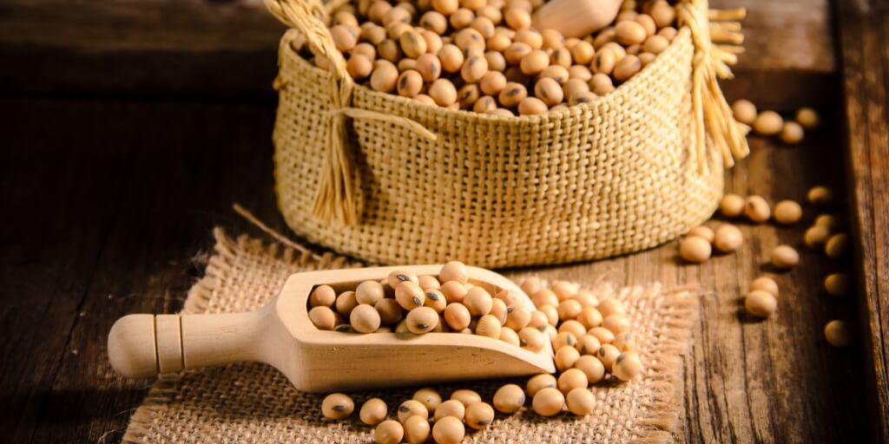

Soja Transgênica: Vantagens e Controvérsias
Data: 16 de maio de 2025
Resumo: Resistente a herbicidas, melhora a produtividade, mas levanta questões ambientais.
A soja transgênica foi desenvolvida para resistir a herbicidas como o glifosato, o que facilita o controle de ervas daninhas.
Essa tecnologia aumentou a produtividade agrícola e reduziu custos de produção. Entretanto, há preocupações sobre impactos ambientais, como o surgimento de plantas daninhas resistentes, além de dúvidas sobre efeitos na saúde a longo prazo.
Estudos científicos indicam que os transgênicos aprovados são seguros para consumo, mas o debate público persiste, envolvendo também questões de monopólio de sementes.